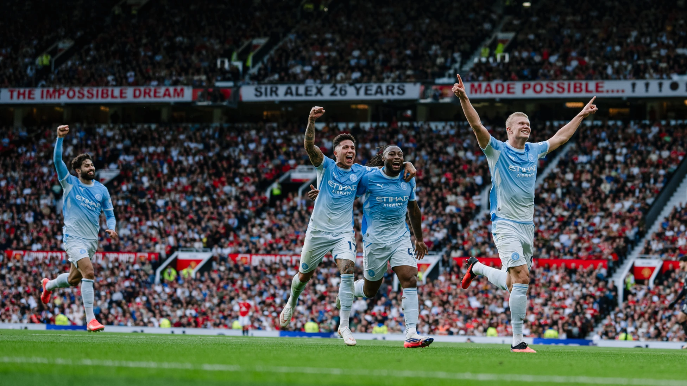

MANCHESTER DERBY
The VAR Controversy

The drama did not end with the final whistle.
After the match, Professional Game Referees acknowledged that the
VAR decision to allow Haaland's goal was incorrect.
Although Haaland himself was judged to be onside, VAR failed to
properly consider the involvement of the City teammate, who was
in an offside position and attempting to play the ball.
Howard Webb later described the VAR process as suffering from
"tunnel vision", with the review concentrating on Haaland's
position while failing to properly assess the wider situation.
The goal stood. City led 1–0. And somehow, despite playing with
ten men for most of the match, they held on.
The Final Whistle
⚽ Erling Haaland — 60'
City's victory extended their perfect start to the league season
to four wins from four matches. Haaland's goal was also his ninth
in Manchester derbies.
But this derby will be remembered for more than the scoreline.
It was the night City survived with ten men, United watched
chances strike the woodwork, Haaland delivered when it mattered
— and a controversial VAR decision continued the argument long
after the final whistle.
One city. Two clubs. One unforgettable derby.
Summary
- 🔴 Manchester United 0
- 🔵 Manchester City 1
- 🟥 Phil Foden — sent off, 23'
- 👨⚖️ Referee: Michael Oliver
- 🏟️ Old Trafford